library(tidyverse)
library(mosaic)
library(rio)
library(car)Regression Practice
Introduction
In this assignment, you will practice regression analysis including:
- Plotting bivariate data with a regression line
- Calculating and interpreting the correlation coefficient, r
- Fitting a linear regression analysis
- Verifying if a linear model is adequate:
- Checking for linearity (scatterplot)
- Checking for constant variance (
plot(lm_output, which=1)) - Checking for normality of residuals (
qqPlot(lm_output$residuals))
Car Prices and Mileage

You are interested in purchasing an all wheel drive Acura MDX for those slick Rexburg winters. You found what you think is a good deal for on a low-mileage 2020 model but you’d like to be sure. You go on Autotrader.com and randomly select 23 Acura MDX’s and collect Price and Mileage information.
Load the data and use R to answer the questions below.
cars <- import('https://github.com/byuistats/Math221D_Cannon/raw/master/Data/acuraMDX_price_vs_mileage.csv')
glimpse(cars)Rows: 23
Columns: 2
$ Mileage <int> 110298, 92950, 165165, 162115, 120198, 193000, 145949, 155…
$ `MDX Price` <int> 11991, 13995, 8750, 10995, 10500, 8495, 10000, 9499, 9995,…Before you begin:
What is the response/dependent variable? -> Price
What is the explanatory variable -> Mileage
What do you think is the nature of the relationship between the two? -> Negative
How strong do you think the relationship is? -> Pretty strong, somewhere around -0.75
Plot the Data and calculate r
cor(cars$`MDX Price` ~ cars$Mileage) # Get the correlation coefficient[1] -0.8185192ggplot(data = cars, mapping = aes(x = Mileage, y = `MDX Price`)) +
geom_point() +
geom_smooth(method = "lm", level=0.95) # Use level to change the confident level, se for turning on the confident level graph on or off ex. se = TRUE/ FALSE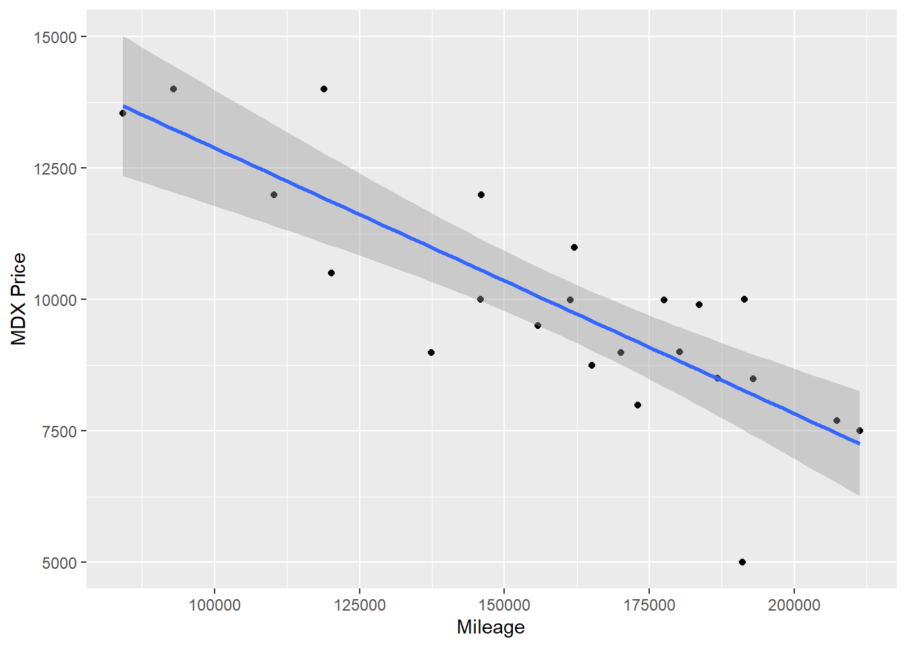
Does the relationship look linear? -> Yes
What is the correlation coefficient, r? -> -0.8185192
What does this r show? -> The direction and the strength of the correlation between car price and car mileage.
Fit a Linear Regression Model
lm_output <- lm(cars$`MDX Price` ~ cars$Mileage)
summary(lm_output)
Call:
lm(formula = cars$`MDX Price` ~ cars$Mileage)
Residuals:
Min 1Q Median 3Q Max
-3282.9 -562.4 170.8 893.5 2068.6
Coefficients:
Estimate Std. Error t value Pr(>|t|)
(Intercept) 1.793e+04 1.261e+03 14.218 3.01e-12 ***
cars$Mileage -5.051e-02 7.736e-03 -6.529 1.81e-06 ***
---
Signif. codes: 0 '***' 0.001 '**' 0.01 '*' 0.05 '.' 0.1 ' ' 1
Residual standard error: 1274 on 21 degrees of freedom
Multiple R-squared: 0.67, Adjusted R-squared: 0.6543
F-statistic: 42.63 on 1 and 21 DF, p-value: 1.813e-06# For every mile driven, on average, the price of MDX drops 0.05 dollars. -> get it from the coefficient of response variable
confint(lm_output, conf.level = 0.95) 2.5 % 97.5 %
(Intercept) 1.531030e+04 2.055629e+04
cars$Mileage -6.659524e-02 -3.442092e-02# With 95% confidence, for every mile driven, on average, the price of MDX drops between 0.066 and 0.034.
qqPlot(lm_output$residuals) # See if the residuals are normally distributed
[1] 20 23plot(lm_output, which=1) # See if the residuals are distributed equally around the graph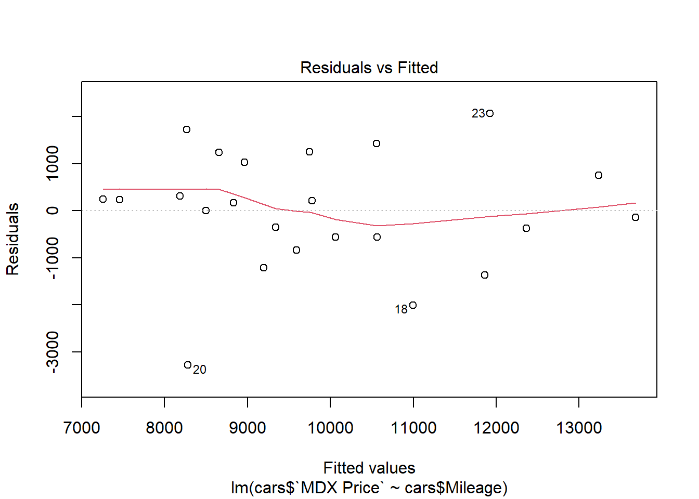
What is the slope of the regression line, and what does it mean? -> The slope of the regression line is -0.0505 and it means
What is the intercept and what does it mean? -> The intercept value is 17930, which means when the car mileage equals to 0, the car price is 17930 dollar on average.
What is your p-value? -> 1.81e-06
What is your conclusion? -> I have sufficient evidence to suggest that there’s a linear relationship between the car price and the car mileage of Acura MDX’s model.
What is the confidence interval for the slope? -> (-6.659524e-02, -3.442092e-02) for 0.95 confidence level
confint(lm_output, conf.level = 0.95) 2.5 % 97.5 %
(Intercept) 1.531030e+04 2.055629e+04
cars$Mileage -6.659524e-02 -3.442092e-02# use the lm model for confidence interval!Interpret the confidence interval.
Check Model Requirements
Check the normality of the residuals:
qqPlot(lm_output$residuals)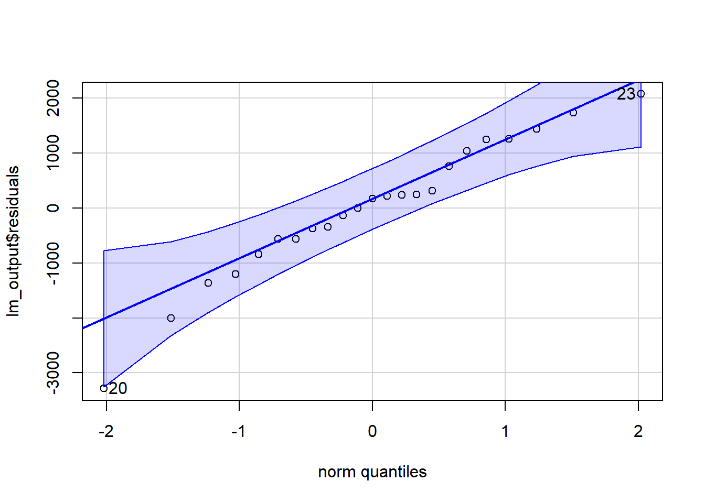
[1] 20 23Check for constant variance (Residual by Predicted plot):
plot(lm_output, which = 1)
Lastly, the car you’re interested in buying has around 100,000 miles and costs $11,200. Could this be considered a good deal? Why?
17930 - 0.05051 * 100000[1] 12879Answer: Yes. On average, the Acura MDX’s from this company with 100,000 miles cost 12,879 on average. Since 11,200 is less than average cost, it’s a better deal!
Manatee Deaths and Motorboat Registrations in Florida

Florida is a fabulous place for experiencing wildlife and recreation. Unfortunately, sometimes those two activities conflict.
Researchers collected over 30 years of data about water craft registrations (motor and non-motor boats) and manatee deaths. The goal of the research is to evaluate the relationship between boat registrations and manatee deaths.
Before you begin:
What is the response/dependent variable? -> The numbers of manatee death.
What is the explanatory variable -> The numbers of water craft registrations
What do you think is the nature of the relationship between the two? -> Positive. If there’s more water craft registrations, more manatee hit accidents would like to happen.
How strong do you think the relationship is? -> I think it’s pretty strong. Somewhere around 0.8
Load the data:
manatees <- import('https://github.com/byuistats/Math221D_Cannon/raw/master/Data/manatees.csv')
glimpse(manatees)Rows: 35
Columns: 4
$ `Fiscal Year` <int> 1977, 1978, 1979, 1980, 1981, 1982, 1983, 19…
$ `Power Boats (in 1000's)` <int> 436, 449, 470, 487, 502, 501, 515, 548, 575,…
$ Manatees <int> 14, 21, 18, 19, 24, 18, 20, 27, 30, 34, 31, …
$ Comments <chr> "Source for the Powerboat Data:", "Data for …Plot the Data and calculate r
plot(Manatees ~ `Power Boats (in 1000's)`, data = manatees) # get the points only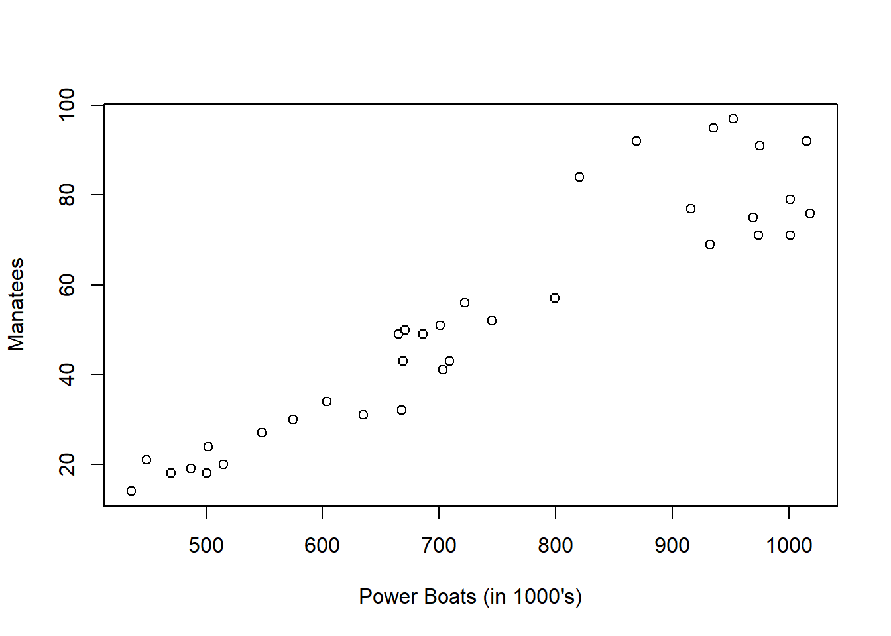
cor(manatees$Manatees ~ manatees$`Power Boats (in 1000's)`)[1] 0.9376368Does the relationship look linear? -> Yes
What is the correlation coefficient, r? -> 0.9376368
What does this r show? -> There’s a strong positive correlation between Water Craft Registration and Manatee Deaths
Fit a Linear Regression Model
manatees_lm <- lm(manatees$Manatees ~ manatees$`Power Boats (in 1000's)`)
summary(manatees_lm)
Call:
lm(formula = manatees$Manatees ~ manatees$`Power Boats (in 1000's)`)
Residuals:
Min 1Q Median 3Q Max
-15.736 -6.642 -1.239 4.374 22.309
Coefficients:
Estimate Std. Error t value Pr(>|t|)
(Intercept) -42.525657 6.347072 -6.70 1.25e-07 ***
manatees$`Power Boats (in 1000's)` 0.129133 0.008334 15.49 < 2e-16 ***
---
Signif. codes: 0 '***' 0.001 '**' 0.01 '*' 0.05 '.' 0.1 ' ' 1
Residual standard error: 9.237 on 33 degrees of freedom
Multiple R-squared: 0.8792, Adjusted R-squared: 0.8755
F-statistic: 240.1 on 1 and 33 DF, p-value: < 2.2e-16Add the regression line to your chart:
# just use ggplot!
ggplot(manatees, aes(x = `Power Boats (in 1000's)`, y = Manatees)) + # get the regression line & data points
geom_point(color = "darkblue") +
theme_bw() +
labs(
title = "Relationship between Water Craft Registration and Manatee Deaths in Florida"
) +
geom_smooth(method = "lm")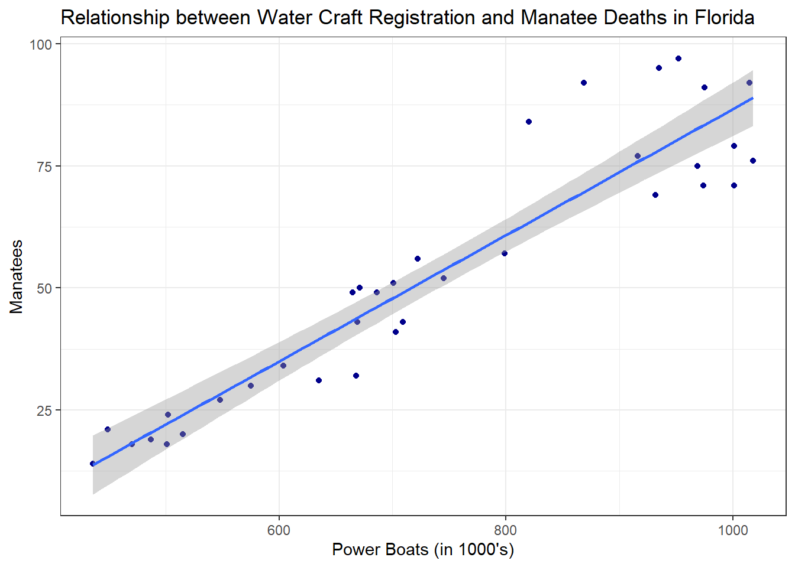
What is the slope of the regression line, and what does it mean? -> The slope of the regression line is 0.129133, which means when the power boats value goes up 1 unit, the manatee death numbers goes up 0.129133 on average.
What is the intercept and what does it mean? -> The intercept is -42.525657, which means when the value of power boats equals to 0, the manatee death numbers equals to -42.525657 on average.
What is your p-value? -> p-value < 2e-16
What is your conclusion? -> I have sufficient evidence to suggest that there’s a linear relationship between the power boats registration numbers of the year and the numbers of death of manatees of the year.
What is the confidence interval for the slope? -> (0.1121773, 0.1460879)
confint(manatee_lm, conf.level = 0.95) # Just confint() for the confident values! Nothing called confint.int!Error: object 'manatee_lm' not foundInterpret the confidence interval: -> I’m 95% confident to suggest that when the value of power boats registration goes up 1 unit, the manatee death numbers will go up between 0.1121773 to 0.1460879.
Check Model Requirements
Check the normality of the residuals:
qqPlot(manatees_lm$residuals)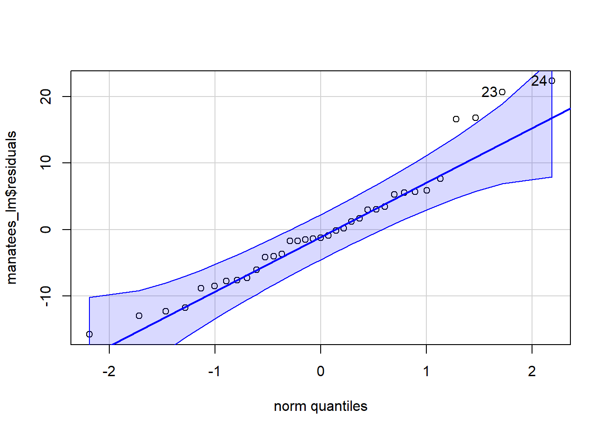
[1] 24 23Check for constant variance (Residual by Predicted plot):
plot(manatees_lm, which = 1)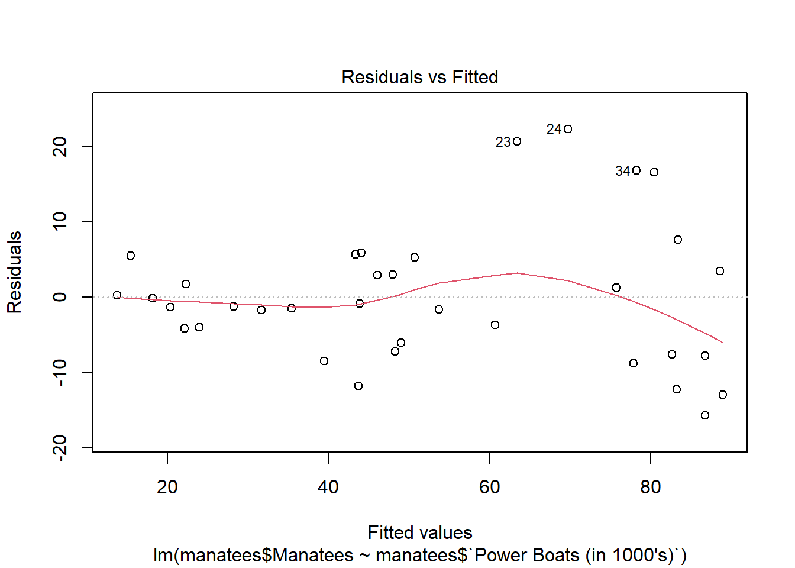
MCAT Score and GPA

The MCAT is an entrance exam for medical schools. It seems likely that there is a relationship between your undergraduate GPA and how well you do on the MCAT.
GPA and MCAT score data were collected on 55 prospective medical students.
Before you begin:
What is the response/dependent variable? -> The MCAT score
What is the explanatory variable -> The undergraduate GPA
What do you think is the nature of the relationship between the two? -> Positive!
How strong do you think the relationship is? -> Very strong! Somewhere about 0.93
Load the data:
mcat <- import('https://github.com/byuistats/Math221D_Cannon/raw/master/Data/mcat_gpa.csv')
glimpse(mcat)Rows: 55
Columns: 2
$ GPA <dbl> 3.62, 3.84, 3.23, 3.69, 3.38, 3.72, 3.89, 3.34, 3.71, 3.89, 3.97,…
$ MCAT <int> 38, 45, 33, 40, 35, 36, 40, 39, 35, 34, 39, 31, 35, 32, 32, 38, 3…Plot the Data and calculate r
plot(MCAT ~ GPA, data = mcat)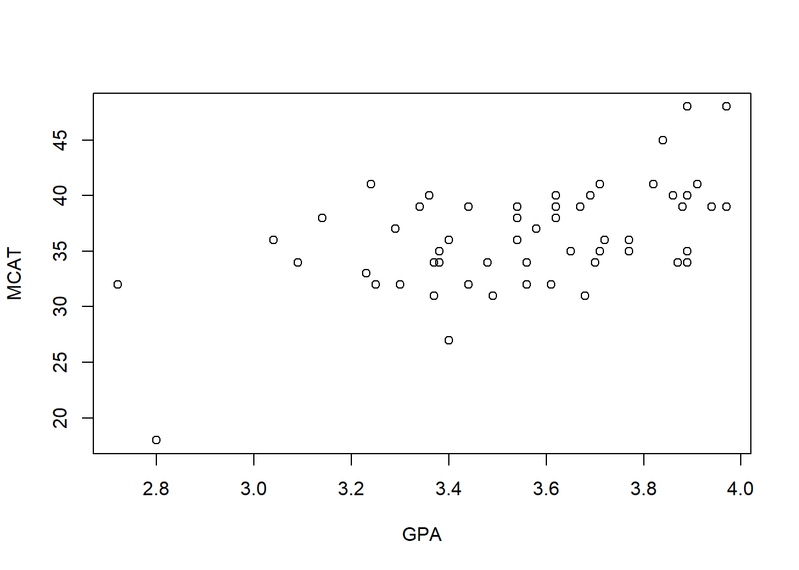
cor(mcat$MCAT ~ mcat$GPA)[1] 0.5414202Does the relationship look linear? -> Yes.
What is the correlation coefficient, r? -> 0.5414202
What does this r show? -> The strength and the direction of the correlation between GPA and MCAT score.
Fit a Linear Regression Model
mcat_lm <- lm(mcat$MCAT ~ mcat$GPA)
summary(mcat_lm)
Call:
lm(formula = mcat$MCAT ~ mcat$GPA)
Residuals:
Min 1Q Median 3Q Max
-11.4148 -2.5168 -0.1519 2.6653 8.6616
Coefficients:
Estimate Std. Error t value Pr(>|t|)
(Intercept) 3.923 6.922 0.567 0.573
mcat$GPA 9.104 1.942 4.688 1.97e-05 ***
---
Signif. codes: 0 '***' 0.001 '**' 0.01 '*' 0.05 '.' 0.1 ' ' 1
Residual standard error: 4.088 on 53 degrees of freedom
Multiple R-squared: 0.2931, Adjusted R-squared: 0.2798
F-statistic: 21.98 on 1 and 53 DF, p-value: 1.969e-05Add the regression line to your chart:
# USE ggplot!!
ggplot(mcat, aes(x = `GPA`, y = `MCAT`)) + # Remember, we put the original dataset for the ggplot!
geom_point(color = "darkblue") + # Make sure you have quoting around the color name!
labs(
title = "The Relationship between Undergraduate GPA and MCAT Score"
) +
geom_smooth(method = lm)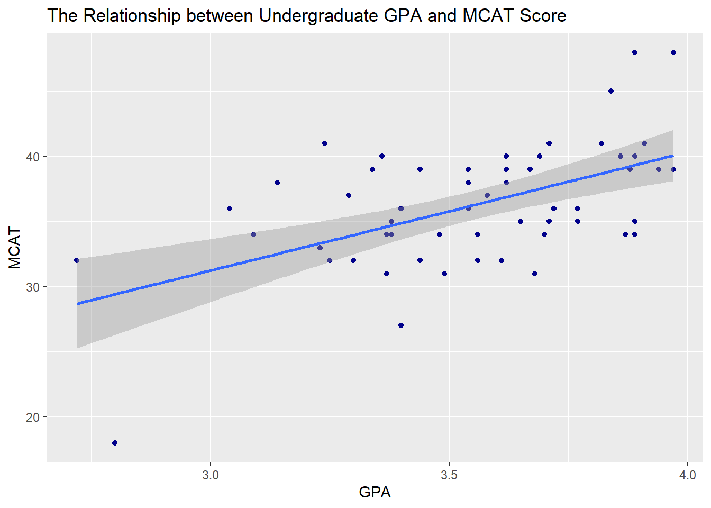
What is the slope of the regression line, and what does it mean? -> The slope of the regression line is 9.104, which means when the GPA goes up 1 unit, the MCAT score will go up 9.104 on average.
What is the intercept and what does it mean? -> The intercept is 3.923, which means when the GPA value equals to 0, the MCAT score will be 3.923 on average.
What is your p-value? -> 1.97e-05
What is your conclusion? -> I have sufficient evidence to suggest that there’s a linear relationship between undergraduate GPA and MCAT score.
What is the confidence interval for the slope? -> (5.209161, 12.99928)
confint(mcat_lm, conf.level = 0.95) 2.5 % 97.5 %
(Intercept) -9.961361 17.80724
mcat$GPA 5.209161 12.99928Interpret the confidence interval: -> When the GPA goes up by 1 unit, the MCAT score will go up between 5.209161 and 12.99928.
Check Model Requirements
Check the normality of the residuals:
qqPlot(mcat_lm$residuals)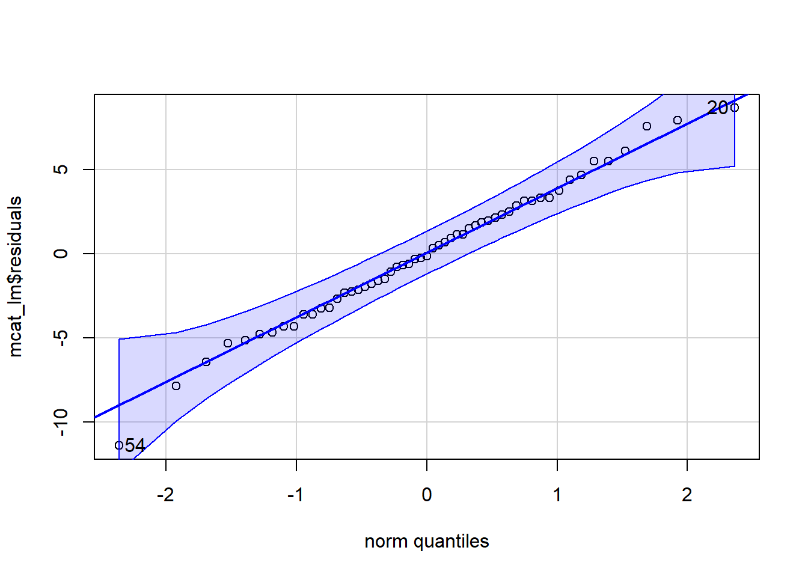
[1] 54 20Check for constant variance (Residual by Predicted plot):
plot(mcat_lm, which = 1)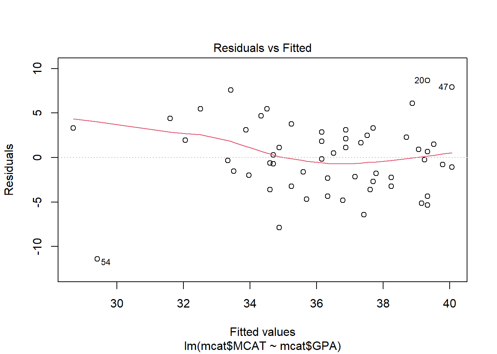